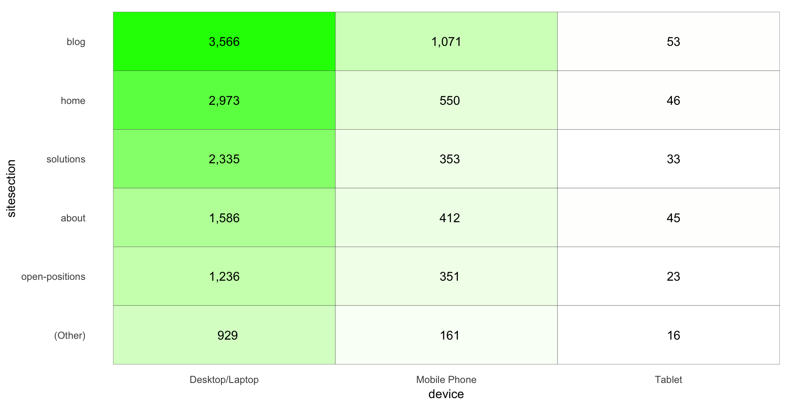
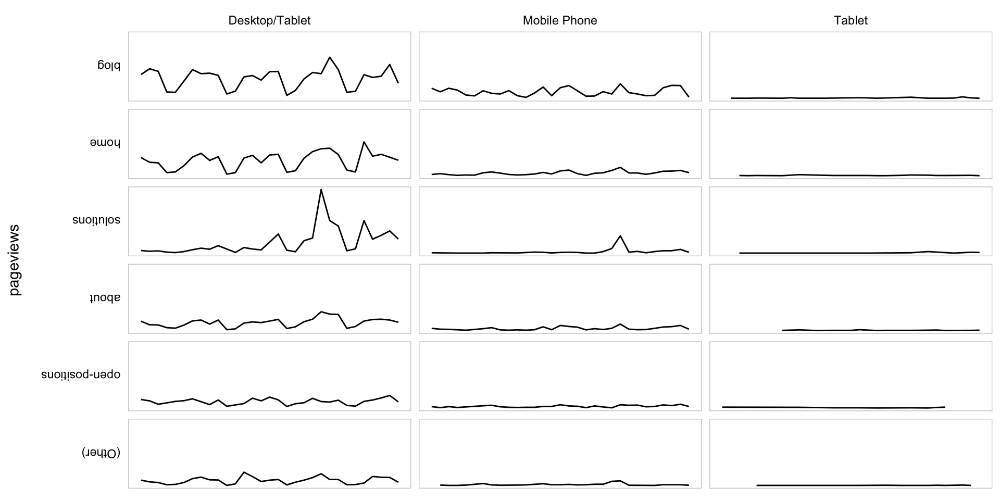

This example pulls page views by day for device type and site section and then displays them two different ways:
Be sure you’ve completed the steps on the Initial Setup page before running this code.
For the setup, we’re going to load a few libraries, load our specific Adobe Analytics credentials, and then authorize with Adobe.
# Load the necessary libraries
library(RSiteCatalyst)
library(tidyverse)
library(devtools)
library(jsonlite) # Needed for unbox() in examples with inline segments
# Load the username, shared secret, and report suite ID
username <- Sys.getenv("ADOBE_API_USERNAME")
secret <- Sys.getenv("ADOBE_API_SECRET")
# Authorize Adobe Aalytics.
SCAuth(username, secret)## [1] "Credentials Saved in RSiteCatalyst Namespace."# Set the RSID and the date range. If you want to, you can swap out the Sys.getenv()
# call and just replace that with a hardcoded value for the RSID. And, the start
# and end date are currently set to choose the last 30 days, but those can be
# hardcoded as well.
rsid <- Sys.getenv("ADOBE_RSID")
start_date <- Sys.Date() - 31 # 30 days back from yesterday
end_date <- Sys.Date() - 1 # YesterdayIf that all runs with just some messages but no errors, then you’re set for the next chunk of code: pulling the data.
This is a simple query with just three dimensions and one metric. We’re pulling the data at a daily level so we can plot the sparklines, but we’re then going to “roll it up” for the heatmap totals.
# Pull the data. See ?QueueTrended() for additional parameters.
aa_data <- QueueTrended(rsid,
date.from = start_date,
date.to = end_date,
metrics = "pageviews",
elements = c("mobiledevicetype","sitesection"),
date.granularity = "day")
# Go ahead and do a quick inspection of the data that was returned. This isn't required,
# but it's a good check along the way.
head(aa_data)| datetime | mobiledevicetype | sitesection | pageviews | segment.id | segment.name |
|---|---|---|---|---|---|
| 2017-09-03 | Other | blog | 421 | ||
| 2017-09-03 | Other | services | 12 | ||
| 2017-09-03 | Other | community | 9 | ||
| 2017-09-03 | Other | 2 | 3 | ||
| 2017-09-03 | Other | terms | 1 | ||
| 2017-09-03 | Other | contact | 1 |
We’ve got three things we want to do here. Actually, two are “wants,” and one is a “need:”
The first two of these are pretty straightforward to do. The third gets a bit messy, as we have to first total up the site sections to figure out which are the “top 5,” then go through an make all other site sections “(Other),” and then repeat the totalling process to treat “(Other)” as a single site section.
# Convert the datetime from POSIXlt to Date
aa_data$datetime <- as.Date(aa_data$datetime)
# Clean up the table a bit
aa_data <- aa_data %>%
mutate(device = ifelse(mobiledevicetype=="Other", "Desktop/Tablet", mobiledevicetype)) %>%
select(datetime, device, sitesection, pageviews)
# Roll up to just be site section tables and then arrange the values for use in both grabbing the
# top 5 values and then, ultimately, in converting the site section column to a factor. This is
# one of those things that is pretty standard to need to do. We're going to sort descending, but,
# for one of the data frames, we're actually going to need to reverse the order as we create the
# factors. This just comes with experimentation and experience.
sitesection_totals <- aa_data %>%
group_by(sitesection) %>%
summarise(pageviews = sum(pageviews)) %>%
arrange(-pageviews)
# Do the same thing, but for device. For this one, we actually want to sort
# descending.
device_totals <- aa_data %>%
group_by(device) %>%
summarise(pageviews = sum(pageviews)) %>%
arrange(-pageviews)
# Get the top 5 site sections and then change all other values to be "(Other)"
# Get the top 5 site sections
sitesection_top5 <- top_n(sitesection_totals, n = 5, wt = pageviews)
# Add a column to the totals that uses "(Other)"
sitesection_totals <- sitesection_totals %>%
mutate(sitesection_new = ifelse(sitesection %in% sitesection_top5$sitesection,
sitesection,
"(Other)"))
# Update the original data to use the new site section
aa_data <- aa_data %>%
left_join(sitesection_totals, by = c(sitesection = "sitesection"))
# Clean up the columns and update the totals by collapsing "(Other)" rows
aa_data_new <- aa_data %>%
mutate(pageviews = pageviews.x) %>%
select(-sitesection) %>%
mutate(sitesection = sitesection_new) %>%
select(datetime, device, sitesection, pageviews) %>%
group_by(datetime, device, sitesection) %>%
summarise(pageviews = sum(pageviews))
# Re-do the "totals" for sitesection
sitesection_totals <- aa_data_new %>%
group_by(sitesection) %>%
summarise(pageviews = sum(pageviews)) %>%
arrange(-pageviews)
# Convert the sitesection and device columns to factors in both of our main data frames.
aa_data_new$sitesection <- factor(aa_data_new$sitesection,
levels = sitesection_totals$sitesection)
aa_data_new$device <- factor(aa_data_new$device,
levels = device_totals$device)
# Remove the "datetime" component to get total page views for the heatmap
aa_data_totals <- aa_data_new %>%
group_by(device, sitesection) %>%
summarise(pageviews = sum(pageviews))
aa_data_totals$sitesection <- factor(aa_data_totals$sitesection,
levels = rev(sitesection_totals$sitesection)) # Reversing the factor order
aa_data_totals$device <- factor(aa_data_totals$device,
levels = device_totals$device)
# Let's just check that the aa_data_totals we created looks pretty normal
head(aa_data_totals)| device | sitesection | pageviews |
|---|---|---|
| Desktop/Tablet | blog | 35837 |
| Desktop/Tablet | services | 798 |
| Desktop/Tablet | (Other) | 568 |
| Desktop/Tablet | community | 504 |
| Desktop/Tablet | about-us | 312 |
| Desktop/Tablet | partner | 222 |
We’re going to break the standard for this site with this example by doing two visualizations:
We’ll make a little heatmap of the data in a pivoted fashion with ggplot. This requires two “geoms” – geom_tile() to make the heatmap (the shaded grid), and then geom_text() to actually put the values in the heatmap. We’ll use the aa_data_totals data frame for this.
The use of the format() function in the label argument is a handy little way to get commas displayed in numbers as the 000s separator (which means it’s easy to swap out if you’re in a locale where that is not the convention).
Note how the order of the rows and columns seems pretty logical – from “biggest values” to “smallest values.” This is entirely due to the data munging we did to convert sitesection and device to factors and imposing some logic on the ordering of their levels.
There is a lot of additional adjustments that you may want to get into with this layout, but this site isn’t intended to be a full tutorial on ggplot2, so we’re going to call this “good enough.”
# Create the plot
gg <- ggplot(aa_data_totals, mapping=aes(x = device, y = sitesection)) +
geom_tile(aes(fill = pageviews), colour = "grey30") +
geom_text(aes(label = format(pageviews, big.mark = ","))) +
scale_fill_gradient(low = "white", high = "green") + # Specify the gradient colors
guides(fill = FALSE) + # Remove the legend
theme_light() +
theme(panel.grid = element_blank(),
panel.border = element_blank(),
axis.ticks = element_blank())
# Output the plot. You *could* just remove the "gg <-" in the code above, but it's
# generally a best practice to create a plot object and then output it, rather than
# outputting it on the fly.
gg
Now, we’re going to use the original data (albeit with sitesection and device converted to factors) to plot a bunch of sparklines. Note that this is a fundamentally different technique than what was used for the heatmap. The heatmap used a “grid” geom – geom_text() – for the layout. For the sparklines, we’re going to relyin on facet_grid(), which is not a geom, but, rather, specifies a grid into which individual geom_line() geoms will be displayed.
Once again, we’ve got relatively minimal tuning of the actual visualization here, and most of that is through adjustments through theme(). Obviously, this could be adjusted much more.
# Create the plot
gg_sparklines <- ggplot(aa_data_new, mapping=aes(x = datetime, y = pageviews)) +
geom_line() +
facet_grid(sitesection ~ device, switch = "y") +
theme_light() +
theme(panel.grid = element_blank(),
panel.border = element_rect(fill = NA, colour = "gray80"),
panel.background = element_blank(),
strip.background = element_blank(),
strip.text = element_text(colour = "black"),
strip.text.y = element_text(angle = 0, hjust = 1),
axis.ticks = element_blank(),
axis.text = element_blank(),
axis.title.x = element_blank())
# Output the plot. You *could* just remove the "gg <-" in the code above, but it's
# generally a best practice to create a plot object and then output it, rather than
# outputting it on the fly.
gg_sparklines
This site is a sub-site to dartistics.com